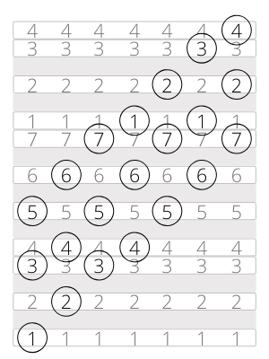

Chords in the Major Scale
Most pieces of music have more than one chord. However, if you try to play a random sequence of major and minor chords, it might sound jarring. You might want it to sound jarring, but you might not. Each chord might sound good on its own, but going from one chord to another complicates things. How do you find a sequence of chords that sound good together? You could use your intuition, but that might take a long time. And what if your intuition gets stuck? Finding a sequence of chords that sound good is the same as finding a sequence of notes that sound good together. Stick to a scale. There are more chords you can make using the notes in the major scale. Playing the first, third and fifth notes creates a major chord, but you could make another chord by playing the second, fourth and sixth notes at the same time. Same with the third, fifth, and seventh. Let’s look at what happens when you do this.
The “one, three, five” pattern is the basic structure of all of these three-note chords. You can try playing these on any major scale you know well. When you start this pattern on the second note of the scale, you get two, four, and six. If you look at the distances between the notes in this chord, you see that from the bottom note to the middle note is three semitones, a minor third, and from the bottom note to the top note is seven semitones, a perfect fifth. That’s the same as a minor chord! This means that using the second, fourth, and sixth notes of a major scale, you create a minor chord. In other words, you can make a D minor chord using notes from the C major scale. Songs in the key of C major can sometimes use a D minor chord, and this will sound “normal.”
Using the “one, three, five” pattern in the major scale, we can make seven different chords. I’ll save you the trouble of analyzing the distances between the notes of these chords (although going through that trouble wouldn’t hurt!). The chords that start on the first, fourth and fifth notes are all major chords. In C major, that would be C, F, and G major. The chords that start on the second, third and sixth notes of the scale are all minor chords. In C major, that would be D, E, and A minor.
The chord that starts on the seventh note is different from all the others. In this chord, the distance from the bottom note to the middle note is three semitones, a minor third, and the distance from the bottom note to the top note is only six semitones. Six semitones create an interval called a diminished fifth, as opposed to the perfect fifth we see in all the other chords. If you try playing this chord, you’ll hear that the diminished fifth creates a very different mood compared with the other chords in the scale. This chord is not very common in most popular music, but it is used a lot in jazz and classical. It is called a diminished chord, or a “minor flat five” chord (because it’s like a minor chord with a lowered fifth).
If you want to be able to play chord progressions in many keys, I would suggest learning the chords in all the major scales. I’ve explained how the C major scale can create these chords: C major, D minor, E minor, F major, G major, A minor, and B diminished. What are the chords in all the other major scales?